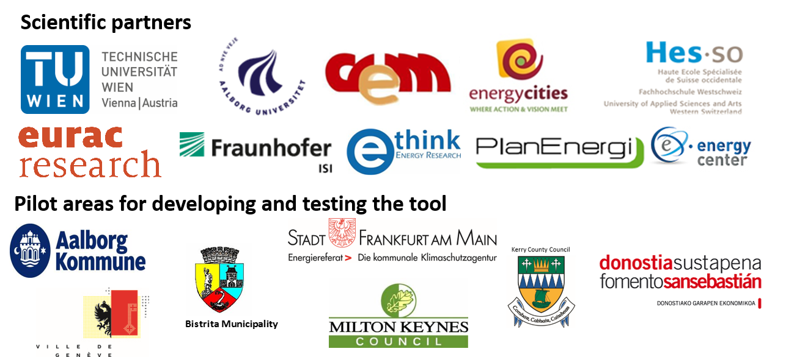

<div id="modal-full" class="uk-modal-full" uk-modal>
  <div class="uk-modal-dialog">
    <button
      class="uk-modal-close-full uk-close-large"
      type="button"
      uk-close
    ></button>
    <div class="uk-grid-collapse uk-child-width-1-1@s uk-flex-middle" uk-grid>
      <!-- <div class="uk-background-cover" uk-height-viewport>
            </div> -->
      <div class="uk-padding-large main-container">
        <div class="uk-column-1-2">
          <div class="logo-container hotmaps">
            
          </div>
          <div class="logo-container parteners">
            
          </div>
        </div>
        <p>
          The <strong>Hotmaps</strong> project aims at designing a toolbox to support public authorities, energy agencies and urban planners in strategic heating and cooling planning on local, regional and national levels, and in line with EU policies.
          More information on the project can be found here: <a class="uk-link-heading" href="http://www.hotmaps-project.eu" target="_blank">www.hotmaps-project.eu</a>
        </p>
        <p>
          Here we present the beta-version of the <strong>Hotmaps toolbox</strong>. In the following year the tool will be updated and new releases will be available. In this version the basic functionalities for mapping heating and cooling in EU members are available. In addition also the first calculation models are available – more functionalities including additional calculation models and the possibility to save and load the status of your work on the toolbox will be available in the final release of the tool.
        </p>
        <ul class="uk-list uk-list-bullet">
          <li>
              <strong>Open source:</strong> The developed tool and all related modules run without requiring any other commercial tool or software. Use of and access to Source Code is subject to Open Source Licenses. The datasets that are used in the tool can be found at <a class="uk-link-heading" href="https://gitlab.com/hotmaps" target="_blank">www.gitlab.com/hotmaps</a>. The source code of the tool can be accessed via <a class="uk-link-heading" href="https://github.com/HotMaps" target="_blank">www.github.com/hotmaps</a>.
          </li>
          <li><strong>Feedback and contributions:</strong> We are happy to receive feedback on the tool. Please use the feedback-button in the toolbox to let us know your opinions and suggestions for the tool. Hotmaps also invites other developers to contribute with additional calculation modules or datasets that can be integrated in the toolbox. Please also get in contact with us if you want to take part in the future development of the toolbox. </li>
        </ul>
        <p>
            <strong>Disclaimer:</strong> The data and tools provided on this website are indicative and for research purposes only. No responsibility is taken for the accuracy of included data, figures and results or for using them for unintended purposes.
        </p>
        <p>
            <strong>Data privacy:</strong> By clicking OK below, you accept that this website may use cookies..
        </p>
        <div class="europe-logo">
            

            <span>
              This project has received funding from the European Union’s Horizon 2020 research and innovation programme under grant agreement No. 723677.
            </span>
        </div>
        <p class="uk-text-right">
          <button class="uk-button uk-button-primary uk-modal-close" type="button">OK</button>
        </p>
    </div>
  </div>
</div>
